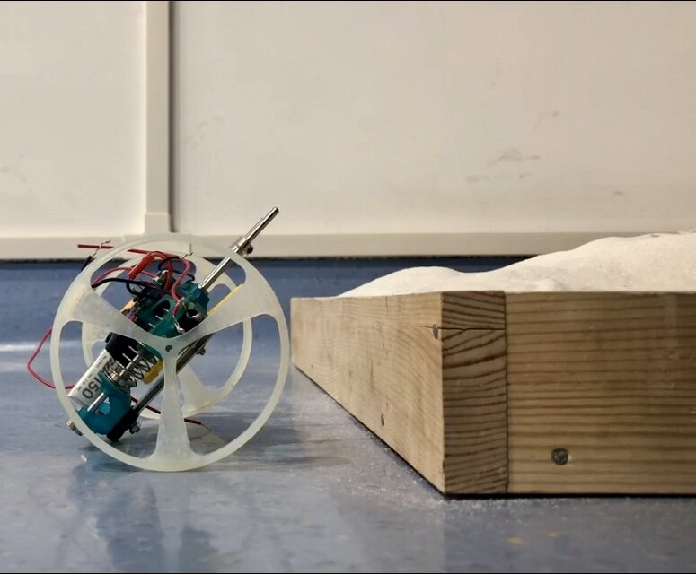
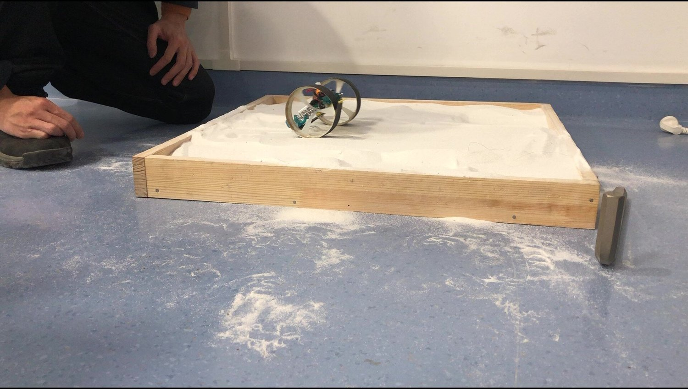

14th Iteration

Computer lab and fabrication lab in UMich are so empty during final week. So I have the luxury to use two computers to run topology optimization and MSC ADAMS at the same time. Also, I run the SLS printer 24/7 to fabricate optimized parts.
I flew back to Shanghai Dec. 23 2019 with those parts. Next day, I returned to SJTU to assemble and test the 14th iteration.

It finally can jump and walk on sand.

Acknowledgement:
SLS Printer provided by Prof. Sridhar Kota